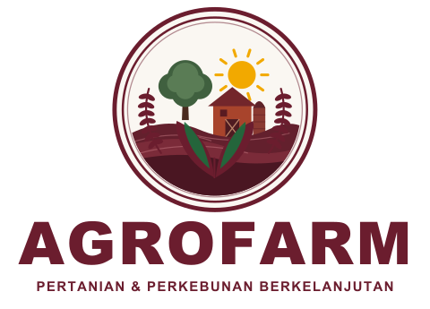
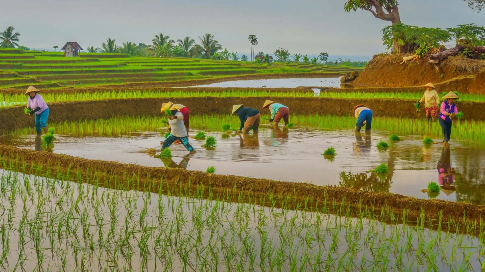
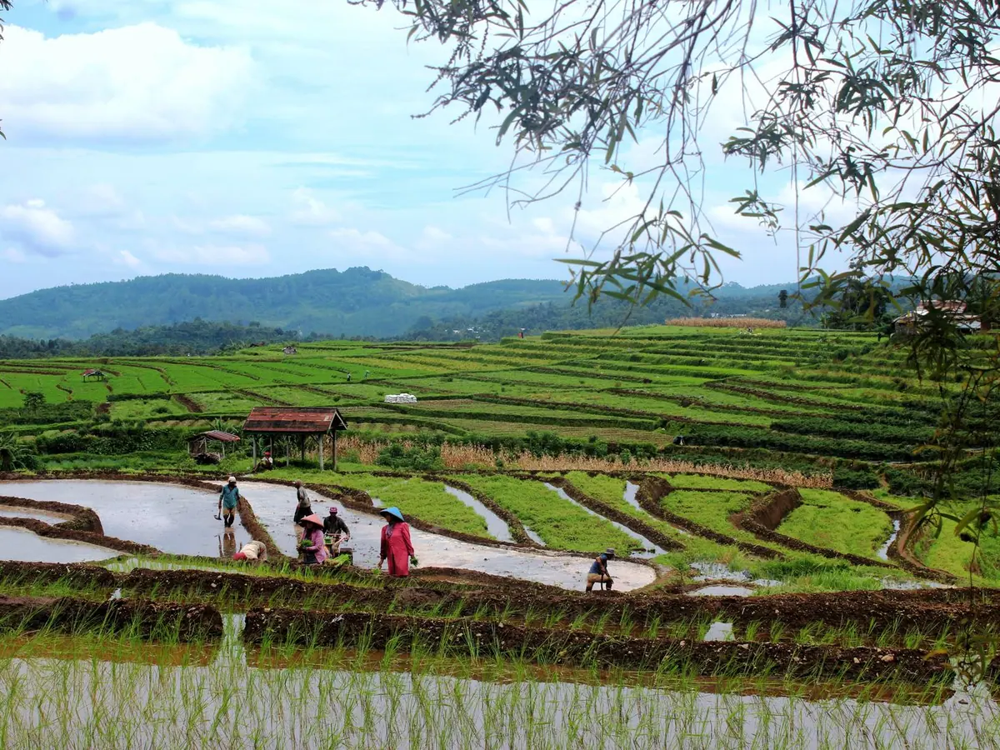
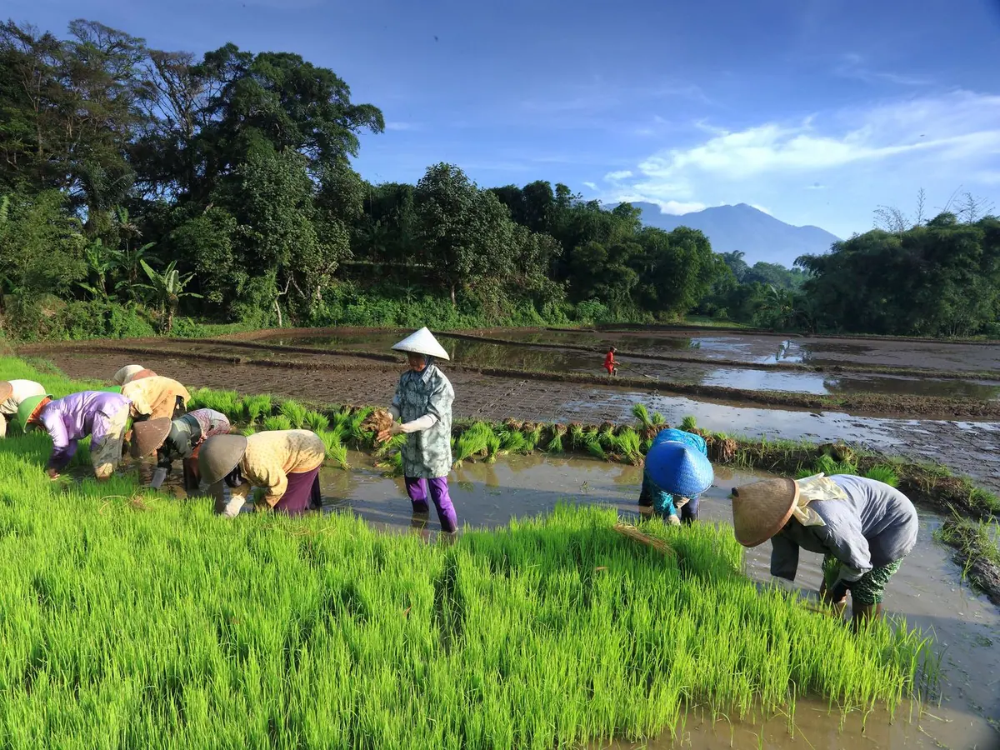

Selamat datang di AgroFarm
Membangun Masa Depan dari Tanah yang Subur.
Portal edukasi pertanian Indonesia yang merangkum jenis tanaman, teknik budidaya, teknologi, artikel, galeri, dan video pembelajaran dalam satu tempat.
Materi disusun dengan bahasa sederhana untuk pelajar dan pemula, lengkap dengan contoh yang dapat diterapkan di pekarangan maupun lahan. Kenali latar belakang, tujuan, dan visi website ini melalui halaman Tentang AgroFarm.

Jelajahi AgroFarm
Informasi Pertanian dalam Satu Tempat
Pelajari berbagai aspek pertanian melalui halaman yang tersusun rapi dan mudah diakses.
Mengapa pertanian penting?
Pertanian adalah fondasi kehidupan.
Pertanian menyediakan bahan pangan, membuka lapangan pekerjaan, dan menjadi bagian penting dari perekonomian. Pengelolaan yang bijak membantu menjaga produktivitas sekaligus kelestarian lingkungan.
Baca selengkapnya
Peran sektor pertanian
Bertani bukan sekadar menanam.
Sektor pertanian menyediakan kebutuhan pangan pokok, membuka lapangan kerja, dan memasok bahan baku bagi banyak industri. Di Indonesia, pertanian juga menjadi bagian dari kehidupan sosial dan budaya masyarakat.
Pengelolaan yang baik dibutuhkan agar hasil panen tetap stabil, pendapatan petani terjaga, serta tanah dan air tetap lestari untuk generasi berikutnya.
Empat peran penting pertanian
- Sumber pangan: menyediakan beras, jagung, sayur, buah, dan umbi.
- Lapangan kerja: menyerap tenaga kerja dari budidaya hingga distribusi.
- Bahan baku industri: memasok kebutuhan pangan olahan, pakan, dan serat.
- Penjaga lingkungan: mendorong pengelolaan tanah dan air yang bijak.
Media pembelajaran
Lihat pertanian dari dekat
Dokumentasi foto dan video edukasi untuk melengkapi materi tulisan di AgroFarm.
Artikel terbaru
Bacaan pilihan dari AgroFarm
Tiga artikel lengkap untuk mulai memahami isu pertanian yang dekat dengan kehidupan sehari-hari.

Pertanian Berkelanjutan
Menjaga produktivitas lahan tanpa menghabiskan sumber daya untuk generasi berikutnya.
Baca artikel
Panduan Budidaya Padi
Langkah dari pemilihan benih, pengairan, pemupukan, panen, hingga menjaga mutu gabah.
Baca artikel
Adaptasi terhadap Perubahan Iklim
Strategi nyata menghadapi cuaca yang tidak menentu dan menjaga hasil panen tetap stabil.
Baca artikelTetap terhubung
Ada pertanyaan atau masukan?
Sampaikan lewat formulir kontak, atau kenali lebih dekat penyusun website ini di halaman profil.